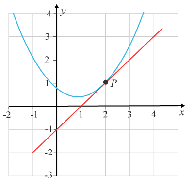
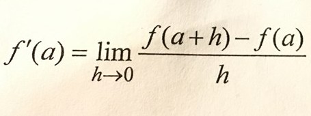
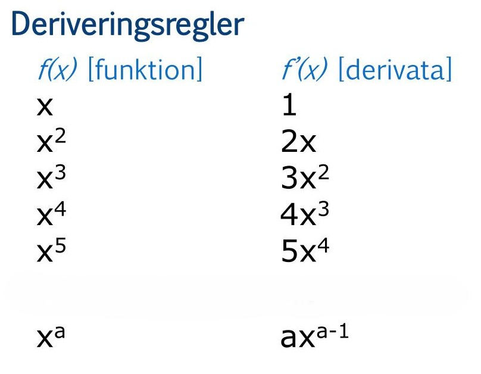

På den här sidan kommer du få information om olika områden inom matematiken som man lär sig under gymnasiet
Derivatan är ett centralt begrepp inom matematiken och används för att beskriva hur snabbt en funktion förändras i en viss punkt. Man kan säga att derivatan visar funktionens förändringstakt. Om man ritar en funktion som en graf motsvarar derivatan lutningen på tangenten till kurvan i en specifik punkt. Om derivatan är positiv växer funktionen, om den är negativ avtar funktionen, och om derivatan är noll har funktionen en topp, botten eller en plan punkt.

Matematiskt definieras derivatan med hjälp av ett gränsvärde, där man undersöker hur kvoten mellan förändringen i funktionens värde och förändringen i x beter sig när förändringen i x blir mycket liten. Denna definition ligger till grund för alla deriveringsregler, men i praktiken använder man oftast färdiga regler för att göra beräkningarna enklare.

Att derivera innebär att man bestämmer derivatan av en funktion. Det finns flera viktiga regler som används. En av de vanligaste är potensregeln, som säger att om man har en funktion av typen x upphöjt till n, så blir derivatan n gånger x upphöjt till n minus 1. Till exempel blir derivatan av x³ lika med 3x². En annan regel är att derivatan av en konstant alltid är noll. Om man har en summa av flera termer deriverar man varje term för sig. Till exempel blir derivatan av x² + x lika med 2x + 1.

Som exempel kan man derivera funktionen f(x) = 3x² + 2x + 1. Genom att använda reglerna får man derivatan f'(x) = 6x + 2.
För att en funktion ska vara deriverbar i en punkt finns det vissa krav. Funktionen måste vara kontinuerlig, vilket betyder att den inte får ha några hopp eller avbrott. Dessutom måste funktionen vara tillräckligt "slät", vilket innebär att den inte får ha några skarpa hörn eller spetsar. Slutligen måste gränsvärdet som definierar derivatan existera och ge ett bestämt värde.
Det finns också situationer där en funktion inte går att derivera. Det gäller till exempel vid hörn, som i absolutbeloppsfunktioner, vid lodräta tangenter eller vid diskontinuiteter där funktionen har ett hopp.
Sammanfattningsvis är derivatan ett verktyg för att beskriva förändring och lutning. Den används inom många områden, som fysik, ekonomi och teknik, och är en viktig del av matematiken på gymnasienivå.